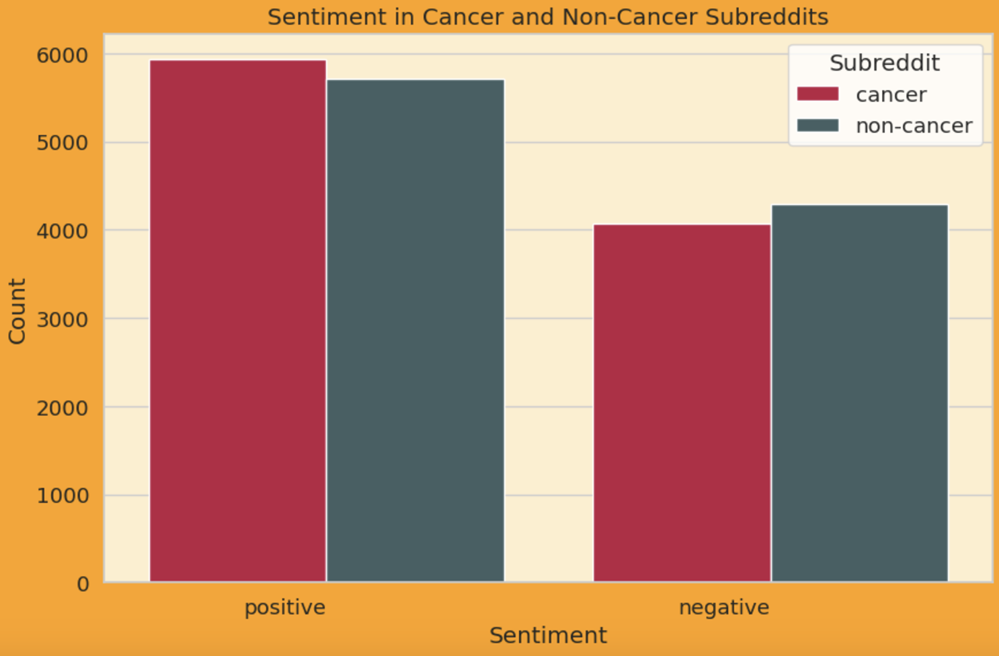
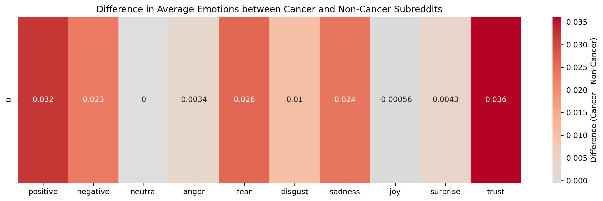
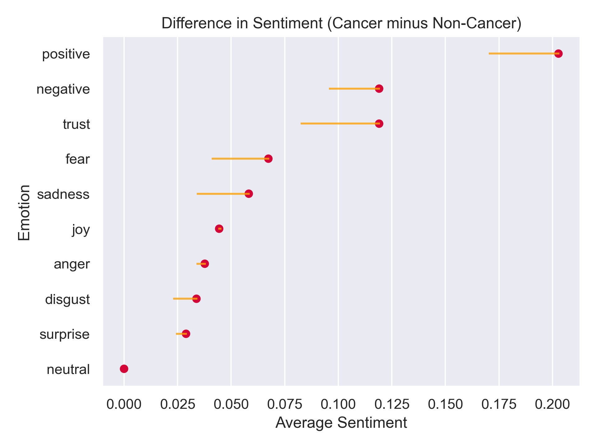
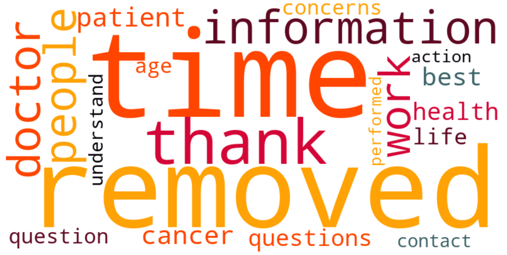

NLP
SparkNLP
Does sentiment vary between cancer and non-cancer subreddits?
Two different types of sentiment analysis was performed on both the cancer and non-cancer subreddits. In this method, a pretrained SparNLP pipeline in Azure ML was used to classify the comments has positive, negative, or neutral.
| sentiment_label | count_cancer | count_non_cancer |
|---|---|---|
| positive | 5929 | 5715 |
| negative | 4071 | 4285 |
Data Loading Comments from cancer-related and non-cancer subreddits were loaded as Parquet files saved in an Azure Blob container.
Sentiment Analysis using SparkNLP Using the Spark NLP analyze_sentiment pretrained pipeline, the comments were analyzed to classify their sentiment as positive, negative, or neutral.
Weighted Scores A custom function mapped sentiment labels to numerical scores (positive = 1, negative = -1, neutral = 0) to compute a weighted sentiment score for each comment.
Sentiment Labeling Comments were labeled based on their weighted scores (positive, negative, or neutral).
Grouping and Aggregation The data was grouped by sentiment labels, and counts were computed for cancer-related and non-cancer subreddits.
Statistical Testing A Chi-square test was conducted to assess whether the differences in sentiment distribution between the two categories showed a difference in positive and negative sentiment in the cancer and non-cancer subreddits.
The source code for the sentiment analysis using SparkNLP is here:

Results of Chi-square Test
Chi-square statistic: 9.325853191514204
P-value: 0.0022594309243996907
Degrees of freedom: 1
Expected frequencies: [[5822. 5822.]
[4178. 4178.]]
To assess the difference between positive and negative sentiment in the cancer and non-cancer subreddits the odds ratio (OR) is calculated as:
\[Odds Ratio (OR) = \frac{(\text{Positive Cancer} / \text{Positive Non-Cancer})}{(\text{Negative Cancer} / \text{Negative Non-Cancer})}\]
\[OR = \frac{(5929/5715)}{(4071/4285)}\]
\[OR = \frac{(5929 \times 4285)}{(5715 \times 4071)}\]
\[OR = 1.065\]
\[\beta = ln(OR)\]
\[\beta = ln(1.065) = 0.063\]
The coefficient indicates the log odds of cancer for the “positive” sentiment label relative to the “negative” sentiment label. A positive value of 0.063 suggests that there is a slight increase in “positive” sentiment in the cancer subreddits compared to the non-cancer subreddits.
The p-value of 0.002 confirms a statistical significance. However, with the odds ratio, the positive sentiment is only slightly increased.
Positive sentiment was higher in the cancer subreddit indicating the these groups may provide support and resiliency in the communities who use these subreddits. In comparison to the rest of Reddit (the non-cancer subreddits), users may look for look and discuss for more information about experience with treatment, logistics, and navigating a cancer diagnosis, fostering a space for encouragement and information.
NRC-LEX
Is there a difference in emotional sentiments between Cancer and Non-Cancer Subreddits?


| subreddit | positive | negative | neutral | anger | fear | disgust | sadness | joy | surprise | trust |
|---|---|---|---|---|---|---|---|---|---|---|
| Cancer | 0.202806 | 0.119079 | 0.0 | 0.037681 | 0.067383 | 0.033798 | 0.058226 | 0.044399 | 0.028933 | 0.119079 |
| Non-Cancer | 0.170739 | 0.096125 | 0.0 | 0.034273 | 0.041384 | 0.023316 | 0.034463 | 0.044963 | 0.024675 | 0.082917 |
TF-IDF
What words are commonly used in the Cancer Subreddits?
Given the results of the sentiment analysis, the frequency of popular words in the cancer subreddit were assess using term frequency-inverse document frequency (TF-IDF). This method was used to identify unique or prominent keywords.
- DATA PREPARATION
- Two separate datasets were loaded: one for cancer-related subreddits and another for non-cancer subreddits.
- The datasets were combined into a single DataFrame with an additional column specifying the source (cancer or non_cancer).
- Text content was preprocessed into a column for TF-IDF analysis.
- TF-IDF VECTORIZATION
- The TfidfVectorizer from scikit-learn was applied separately for cancer text data to compute TF-IDF scores for each word in the respective datasets.
- Common stop words were removed, and the top 20 keywords were extracted based on their aggregated TF-IDF scores across all documents.
- AGGREGATION & RANKING
- Words were ranked in descending order of their total TF-IDF scores for the cancer dataset.
- Rankings allowed for the identification of keywords in the cancer dataset.
| Word | TF-IDF |
|---|---|
| time | 604.333288 |
| removed | 510.072719 |
| thank | 508.752837 |
| information | 491.421062 |
| doctor | 480.772518 |
| people | 467.593201 |
| work | 443.772165 |
| patient | 387.074392 |
| cancer | 365.678933 |
| best | 340.635342 |

In this word cloud we see words such as time, removed, thank, and information. Some of these words may be used in conversations to talk about cancer care and possibly gratitude from support groups in the Reddit forum.
Sources
- Crowdsourcing a Word-Emotion Association Lexicon, Saif Mohammad and Peter Turney, Computational Intelligence, 29 (3), 436-465, 2013.
- Emotions Evoked by Common Words and Phrases: Using Mechanical Turk to Create an Emotion Lexicon, Saif Mohammad and Peter Turney, In Proceedings of the NAACL-HLT 2010 Workshop on Computational Approaches to Analysis and Generation of Emotion in Text, June 2010, LA, California.